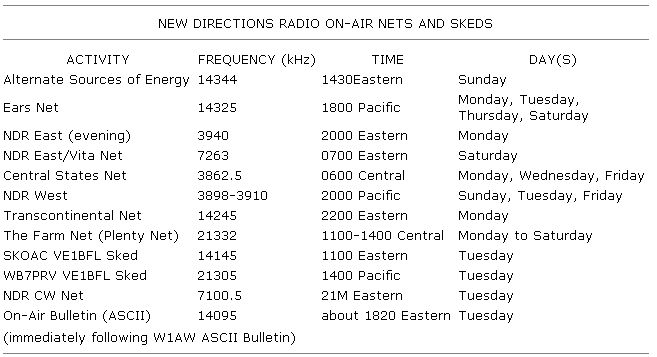

New Directions Radio
September/October 1983
by Copthorne Macdonald
THE NDR DIRECTORY IS OUT!
Thanks to the combined efforts of several NDR volunteers, the New Directions Radio Directory has been compiled and printed ... and is now ready for mailing! The 12-page "first edition" contains 75 personal listings submitted by NDR enthusiasts living in 29 states of the U.S. (plus a few from Canada, Sweden, and England!).
You may recall that the proposal to prepare such a directory was first made in MOTHER NO. 78 ... when Harry Spetla (KA2DRE) noted that it would be a good idea to put together a list of people who share the NDR philosophy. He suggested that the directory should include addresses, phone numbers, and brief descriptions of the current interests and activities of these like-minded radio enthusiasts. Thinking Harry had a good idea, Lee Branum (KL71JG) and I did what we could to get the word out that such a publication was in the works. When listings started coming in, I took care of what little editing was needed ... and then used my computer to produce camera-ready copy.
In addition to Lee's and my efforts, Cassandra Trimble contributed several cartoons ... Arnold Timm supplied some sample NDR logos ... and Paul Rosenberg (KA2POY) printed, collated, and stapled the initial pressrun. And now, Harry is taking care of the mailing, money, and most everything else! (Thanks are also due to the many people who donated to the "seed fund" that covered our start-up expenses.)
There are, of course, many more NDR folks than those listed in this first directory. It's a real shame that everyone didn't get in, but some people probably didn't hear about it, while others very likely forgot to write up a listing and mail it. I admit that I was tempted to add more names, but I resisted that impulse, figuring that being included in the NDR directory should, after all, be your decision and not mine! However, if you were one of those left out-and would like to be includedwhy not sit down and compose a listing right now) Send it to Harry (see the address below), along with your order for a copy of the first edition. (Naturally, I can't promise there'll be a second edition ... but I strongly suspect there will be!)
To receive your copy of the New Directions Radio Directory, send $2.00 (U.S.) to Harry Spetla, Dept. TMEN, RD 1, Box 185, Hoosick Falls, New York 12090. (If you live outside the U.S., please send an extra dollar to help defray postage costs.)
FALL NUT SCHEDULE
Let's face it: Indoor activities-even radio transmittingjust can't compete with such summer delights as gardening, swimming, and camping. But as we settle back into the autumn routine again, most of us hams are finding that radio is creeping back up our priority lists! In fact, September is (in a sense) the start of a new radio season ... so this seems like a good time to update the schedule of NDR on-air activities!
Many nets are still operating at the same times and on the same days, but there are a few changes.
For one, after a period of inactivity, Enos Schera (W4VPD) plans to resume his role as net control station and facilitator of the Alternate Sources of Energy Net on Sunday afternoons. And, for another, Jim Bandy (WA3HKR) hopes that you'll join him on NDR CW Net, Tuesday evenings at 9 PM Eastern Time, just inside the 40-meter Novice band ... on about 7100.5 kHz. (If you don't hear anyone, try calling CQ NDR yourself.)
Also, ASCII transmission of the NDR On-Air Bulletin is moving to the same 14095 kHz frequency used by W1AW for bulletin transmissions. The NDR Bulletin will be sent immediately after completion of the W1AW ASCII bulletins, on Tuesday evenings at about 6:20 PM Eastern Time.
And finally, the Plenty Net-run by The Farm, in Summertown, Tennessee-now meets Monday through Saturday, from 11 AM to 2 PM Central Time on 21332 kHz. (If you don't hear them, try calling exactly on the hour.)
SATELLITE TV
Speaking of The Farm ... its electronics and publishing groups have done it again! Remember The Big Dummy's - Guide to C.B. Radio (that humorous, informative book written by The Farm's radio crew a few years back)? It sold over a million copies, because it was truly helpful to the would-be CBer. Now, Mark Long (WA4LXC) and Jeffrey Keating have written a similarly valuable volume for satellite TV enthusiasts ... The World of Satellite Television (available through Mother's Bookshelf"' for $9.95 plus $1.25 shipping and handling ... see page 120 for ordering information). Its 16 chapters are packed with answers to the questions that anyone seriously thinking about setting up an earth station might have. For example, one section listsin detail-the type and source of programming being relayed by each of 14 major satellites, while other chapters are devoted to receivers ... dishes ... feed horns ... legal questions ... owner installation . . . satellite audio services ... and international satellite systems.
For many people, a satellite receiver is simply an electronic ticket to more sports and movies. But Mark and Jeffrey see something else in it: A satellite receiver, they point out, can make unedited news feeds, programs geared to minority audiences, and even programming from other countries available to viewers. As the pair notes, "In a society where information is increasingly becoming the medium of exchange, instantaneous global communication is causing profound changes in our awareness. Boundaries of money, nationality, time, and space are dissolving in the cooperative linkage of the entire world, which is sharing the resources and technology of space."
LAST WORD
The chart accompanying this column provides a fairly complete schedule of the currently planned New Directions Radio on-air activities.
Peace,
Cop Macdonald (VE1BFL)
P.O. Box 2941
Charlottetown
Prince Edward Island
Canada CIA 8C5
New Directions Radio is an international network of radio amateurs concerned with those ways of using ham radio (and related modes of communicating) . that promote our own growth as individuals, and that we perceive as helping to create a more aware, more caring, and more responsible human society. We encourage all who share these interests to work with its. A current schedule of on-the-air activities is included in each issue of the bimonthly New Directions Roundtable Newsletter, published by-Art Mourad (WB2POB) as a service to the rest of its. To subscribe, send 25c for each issue desired it) Art Mourad, Dept. TMEN, P.O. Box 787, Bergenfield, New Jersey 07621.
 The author of this column, who has been writing for MO THER since 1973, is the inventor of slow-scan television ... a method of amateur radio transmission that allows ham operators to both hear and see each other during shortwave broadcasts. |
 |
|